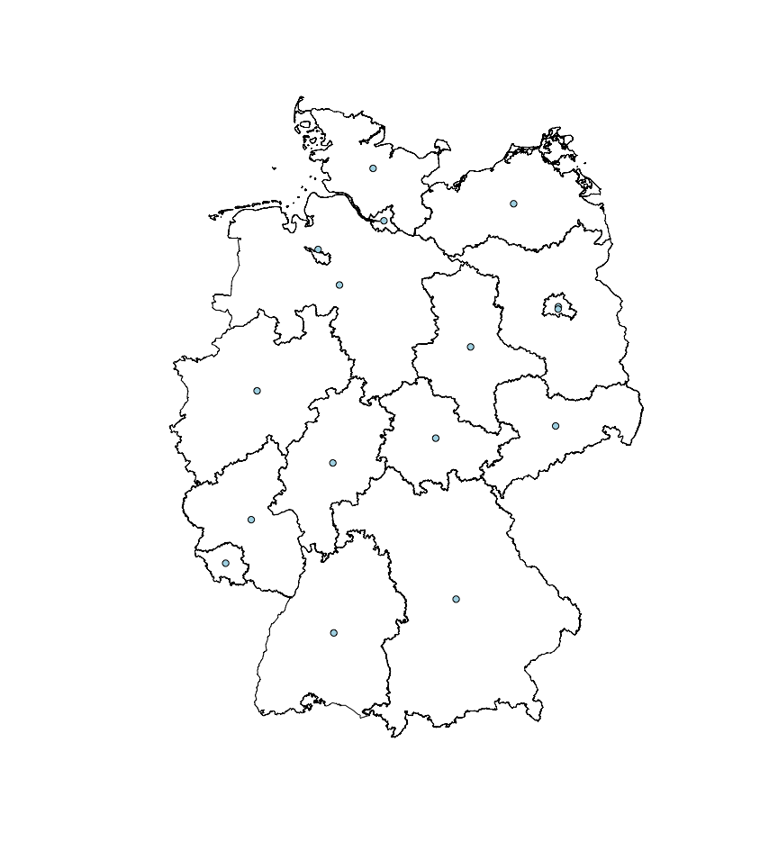

- if you want to use RQGIS in combination with the developer version of QGIS
- this version contains a major bug fix which RQGIS relies on
- preferably by using our install guide
General
| Resource: | CRAN | Travis CI | Appveyor |
|---|---|---|---|
| Platforms: | Multiple | Linux & macOS | Windows |
| R CMD check |  |
||
| Test coverage |
Github

RQGIS establishes an interface between R and QGIS, i.e. it allows the user to access QGIS functionalities from within R. It achieves this by using the QGIS API via the command line. This provides the user with an extensive suite of GIS functions, since QGIS allows you to call native as well as third-party algorithms via its processing framework (see also https://docs.qgis.org/2.14/en/docs/user_manual/processing/index.html). Third-party providers include among others GDAL, GRASS GIS, SAGA GIS, the Orfeo Toolbox, TauDEM and tools for LiDAR data. RQGIS brings you this incredibly powerful geoprocessing environment to the R console.

The main advantages of RQGIS are:
- It provides access to QGIS functionalities. Thereby, it calls Python from the command line (QGIS API) but R users can stay in their programming environment of choice without having to touch Python.
- It offers a broad suite of geoalgorithms making it possible to solve virtually any GIS problem.
- R users can just use one package (RQGIS) instead of using RSAGA and spgrass to access SAGA and GRASS functions. This, however, does not mean that RSAGA and spgrass are obsolete since both packages offer various other advantages. For instance, RSAGA provides many user-friendly and ready-to-use GIS functions such as
rsaga.slope.asp.curvandmulti.focal.function.
Installation
Package installation
In order to run RQGIS properly, you need to download various third-party software packages. Our vignette should help you with the download and installation procedures on various platforms (Windows, Linux, Mac OSX). To access it, use vignette("install_guide", package = "RQGIS"). Overall, we recommend to use the current LTR of QGIS (2.14) with RQGIS.
You can install:
- the latest released version from CRAN with:
install.packages("RQGIS")- the latest RQGIS development version from Github with:
ghit::install_github("jannes-m/RQGIS")RQGIS usage
Subsequently, we will show you a typical workflow of how to use RQGIS. Basically, we will follow the steps also described in the QGIS documentation. In our first and very simple example we simply would like to retrieve the centroid coordinates of a spatial polygon object. First off, we will download the administrative areas of Germany using the raster package.
# attach packages
library("raster")
library("rgdal")
# define path to a temporary folder
dir_tmp <- tempdir()
# download German administrative areas
ger <- getData(name = "GADM", country = "DEU", level = 1)
# ger is of class "SpatialPolygonsDataFrame"Now that we have a spatial object, we can move on to using RQGIS. First of all, we need to specify all the paths necessary to run the QGIS-API. Fortunately, set_env does this for us (assuming that QGIS and all necessary dependencies were installed correctly). The only thing we need to do is: specify the root path to the QGIS-installation. If you do not specify a path, set_env tries to find the OSGeo4W-installation on your C: drive (Windows) though this might take a while. If you are running RQGIS under Linux or on a Mac, set_env assumes that your root path is “/usr” and “/applications/QGIS.app/Contents”, respectively. Please note, that most of the RQGIS functions, you are likely to work with (such as find_algorithms, get_args_man and run_qgis), require the output list (as returned by set_env) containing the paths to the various installations necessary to run QGIS from within R.
# attach RQGIS
library("RQGIS")
# set the environment, i.e. specify all the paths necessary to run QGIS from
# within R
my_env <- set_env()
# under Windows set_env would be much faster if you specify the root path:
# my_env <- set_env("C:/OSGeo4W~1")
# have a look at the paths necessary to run QGIS from within R
my_env
## $root
## [1] "C:\\OSGeo4W64"
##
## $qgis_prefix_path
## [1] "C:\\OSGeo4W64\\apps\\qgis-ltr"
##
## $python_plugins
## [1] "C:\\OSGeo4W64\\apps\\qgis-ltr\\python\\plugins"Secondly, we would like to find out how the function in QGIS is called which gives us the centroids of a polygon shapefile. To do so, we use find_algorithms. We suspect that the function we are looking for contains the words polygon and centroid.
# look for a function that contains the words "polygon" and "centroid"
find_algorithms(search_term = "polygon centroid",
qgis_env = my_env)
## [1] "C:\\Users\\pi37pat\\AppData\\Local\\Temp\\Rtmp4Q9ylK"
## [2] "Polygon centroids------------------------------------>qgis:polygoncentroids"
## [3] "Polygon centroids------------------------------------>saga:polygoncentroids"This gives us two functions we could use. Here, we’ll choose the QGIS function named qgis:polygoncentroids. Subsequently, we would like to know how we can use it, i.e. which function parameters we need to specify.
get_usage(alg = "qgis:polygoncentroids",
qgis_env = my_env,
intern = TRUE)
## [1] "C:\\Users\\pi37pat\\AppData\\Local\\Temp\\Rtmp4Q9ylK"
## [2] "ALGORITHM: Polygon centroids"
## [3] "\tINPUT_LAYER <ParameterVector>"
## [4] "\tOUTPUT_LAYER <OutputVector>"
## [5] ""
## [6] ""
## [7] ""Consequently qgis:polygoncentroids only expects a parameter called INPUT_LAYER, i.e. the path to a polygon shapefile whose centroid coordinates we wish to extract, and a parameter called OUTPUT_LAYER, i.e. the path to the output shapefile. Since it would be tedious to specify manually each and every function argument, especially if a function has more than two or three arguments, we have written a convenience function named get_args_man. This function basically mimics the behavior of the QGIS GUI, i.e. it retrieves all function arguments and respective default values for a given GIS function. It returns these values in the form of a list, i.e. exactly in the format as expected by run_qgis (see further below). If a function argument lets you choose between several options (drop-down menu in a GUI), setting get_arg_man’s options-argument to TRUE makes sure that the first option will be selected (QGIS GUI behavior). For example, qgis:addfieldtoattributestable has three options for the FIELD_TYPE-parameter, namely integer, float and string. Setting options to TRUE means that the field type of your new column will be of type integer.
params <- get_args_man(alg = "qgis:polygoncentroids",
qgis_env = my_env)
params
## $INPUT_LAYER
## [1] "None"
##
## $OUTPUT_LAYER
## [1] "None"In our case, qgis:polygoncentroids has only two function arguments and no default values. Naturally, we need to specify manually our input and output layer. Tab-completion, as for instance provided by the wonderful RStudio IDE, greatly fascilitates this task. Please note that instead of specifying a path to INPUT_LAYER (e.g. “ger.shp”) you can also use a spatial object that resides in the global environment of R. Conveniently, run_qgis will save this spatial object to a temporary location for you later on (see below). Here, we use the SpatialPolygonsDataFrame ger as input layer.
# specify input layer
params$INPUT_LAYER <- ger
# path to the output shapefile
params$OUTPUT_LAYER <- file.path(dir_tmp, "ger_coords.shp")Finally, run_qgis calls the QGIS API to run the specified geoalgorithm with the corresponding function arguments. Aside from accepting spatial objects living in R as input, run_qgis also loads the result directly into R, if desired. Here, we would like to load the OUTPUT_LAYER into R. To do so, we simply specify the desired file(s) in function argument load_output while assigning it/them to an object called out.
out <- run_qgis(alg = "qgis:polygoncentroids",
params = params,
load_output = params$OUTPUT_LAYER,
qgis_env = my_env)Excellent! No error message occured, that means QGIS created a points shapefile containing the centroids of our polygons shapefile. Naturally, we would like to check if the result meets our expectations.
# first, plot the federal states of Germany
plot(ger)
# next plot the centroids created by QGIS
plot(out, pch = 21, add = TRUE, bg = "lightblue", col = "black")
Of course, this is a very simple example. We could have achieved the same using sp::coordinates. To harness the real power of integrating R with a GIS, we will present a second, more complex example. Yet to come in the form of a paper…
(R)QGIS modifications (v. 2.16-2.18.1)
If you would like to use QGIS versions 2.16-2.18.1, you need to fix manually a Processing error in order to make RQGIS work. First, add one import statement (SilentProgress) to ../processing/gui/AlgorithmExecutor.py. Secondly replace python alg.execute(progress) by python alg.execute(progress or SilentProgress()):

The QGIS core team fixed this bug, and starting with QGIS 2.18.2 this manual adjustment is no longer necessary (see also this post). However, we would strongly recommend to either use the QGIS LTR (2.14) or QGIS >= 2.18.2.